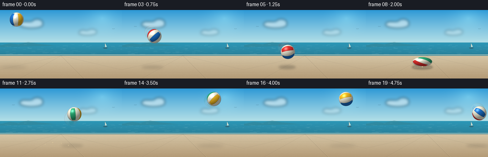
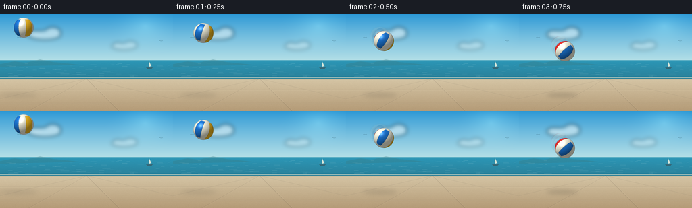

CODING AGENTS AS PIXEL WORLD MODELS
traex/GPT-5.6-Sol · mechanics_0040
点击播放 · 原生 RGB 像素
逐轮保存的候选
回放视频、检查图与代码变化。
每份候选均可单独播放。实际图片检查记录在下方工具轨迹中。
候选 01播放与检查图
点击播放 · 原生 RGB 像素

展开代码变化
--- 上一保存版本
+++ 本次保存版本
@@ -0,0 +1,283 @@
+from pathlib import Path
+import math
+import numpy as np
+from PIL import Image, ImageDraw, ImageFilter
+import artifact_io
+
+# Deterministic procedural animation. Rendering at 4x resolution gives clean,
+# stable edges after downsampling to the requested 256x144 output.
+W, H, N, FPS = 256, 144, 20, 4.0
+S = 4
+WW, HH = W * S, H * S
+GROUND_Y = 120.0
+rng = np.random.default_rng(4701)
+
+
+def sc(v):
+ return int(round(v * S))
+
+
+def make_background():
+ y = np.arange(HH, dtype=np.float32)[:, None]
+ x = np.arange(WW, dtype=np.float32)[None, :]
+ yn = y / (HH - 1)
+ xn = x / (WW - 1)
+
+ arr = np.zeros((HH, WW, 3), dtype=np.float32)
+
+ # Luminous cyan sky with a warmer band at the sea horizon.
+ sky_top = np.array([42, 151, 213], np.float32)
+ sky_bottom = np.array([194, 231, 233], np.float32)
+ t = np.clip(yn / 0.54, 0, 1) ** 0.85
+ arr[:] = sky_top[None, None, :] * (1 - t[..., None]) + sky_bottom[None, None, :] * t[..., None]
+
+ # Sun bloom at upper right, kept subtle so the ball remains the focus.
+ sun_dist = np.sqrt(((xn - 0.84) / 0.24) ** 2 + ((yn - 0.12) / 0.32) ** 2)
+ bloom = np.clip(1 - sun_dist, 0, 1) ** 2 * 28
+ arr += bloom[..., None] * np.array([1.0, 0.90, 0.55])[None, None, :]
+
+ # Calm turquoise ocean, y=68..95 in final coordinates.
+ sea0, sea1 = sc(68), sc(96)
+ sy = np.linspace(0, 1, sea1 - sea0, dtype=np.float32)[:, None]
+ sea_top = np.array([44, 151, 183], np.float32)
+ sea_bottom = np.array([42, 128, 153], np.float32)
+ sea = sea_top[None, None, :] * (1 - sy[..., None]) + sea_bottom[None, None, :] * sy[..., None]
+ sea = np.broadcast_to(sea, (sea1-sea0, WW, 3)).copy()
+ # Tiny deterministic water variation.
+ sea_noise = rng.normal(0, 1.2, (sea1-sea0, WW, 1)).astype(np.float32)
+ sea += sea_noise
+ arr[sea0:sea1] = sea
+
+ # Pale concrete promenade, with slight sunlit mottling.
+ gy = np.clip((yn - 95 / H) / (1 - 95 / H), 0, 1)
+ ground_top = np.array([214, 198, 166], np.float32)
+ ground_bottom = np.array([180, 155, 119], np.float32)
+ ground = ground_top[None, None, :] * (1 - gy[..., None]) + ground_bottom[None, None, :] * gy[..., None]
+ ground = np.broadcast_to(ground, (HH, WW, 3)).copy()
+ fine = rng.normal(0, 2.2, (HH, WW, 1)).astype(np.float32)
+ ground += fine
+ arr[sea1:] = ground[sea1:]
+
+ im = Image.fromarray(np.uint8(np.clip(arr, 0, 255)), 'RGB')
+ d = ImageDraw.Draw(im, 'RGBA')
+
+ # Distant low headland and atmospheric shoreline.
+ d.polygon([(0, sc(74)), (sc(21), sc(70)), (sc(38), sc(72)), (sc(59), sc(67)),
+ (sc(79), sc(71)), (sc(100), sc(73)), (sc(117), sc(75)), (0, sc(78))],
+ fill=(55, 124, 135, 95))
+ d.line([(0, sc(68)), (WW, sc(68))], fill=(230, 244, 235, 125), width=sc(0.6))
+ d.line([(0, sc(94)), (WW, sc(94))], fill=(247, 237, 207, 170), width=sc(1.3))
+ d.line([(0, sc(97)), (WW, sc(97))], fill=(135, 124, 105, 55), width=sc(0.6))
+
+ # Sea glints and wavelets.
+ water_rng = np.random.default_rng(103)
+ for _ in range(74):
+ yy = water_rng.uniform(72, 93)
+ xx = water_rng.uniform(0, 256)
+ length = water_rng.uniform(2.5, 11) * (0.55 + (yy-68)/30)
+ alpha = int(water_rng.uniform(25, 90))
+ d.line([(sc(xx), sc(yy)), (sc(min(256, xx+length)), sc(yy))],
+ fill=(235, 250, 244, alpha), width=max(1, sc(0.35)))
+
+ # Perspective seams in the promenade, subdued and behind the action.
+ for x0 in (-80, 42, 176, 335):
+ d.line([(sc(128), sc(96)), (sc(x0), HH)], fill=(91, 80, 66, 35), width=sc(0.7))
+ d.line([(sc(129), sc(96)), (sc(x0+2), HH)], fill=(255, 244, 214, 24), width=sc(0.5))
+ for yy in (112, 132):
+ d.line([(0, sc(yy)), (WW, sc(yy))], fill=(101, 88, 70, 28), width=sc(0.55))
+ d.line([(0, sc(yy+0.8)), (WW, sc(yy+0.8))], fill=(255, 242, 210, 28), width=sc(0.5))
+
+ # Small distant sailboat and birds establish scale without competing.
+ d.polygon([(sc(220), sc(78)), (sc(220), sc(69)), (sc(224), sc(77))], fill=(248, 244, 223, 205))
+ d.line([(sc(220), sc(68.5)), (sc(220), sc(79))], fill=(56, 80, 84, 150), width=sc(0.45))
+ d.polygon([(sc(216), sc(79)), (sc(226), sc(79)), (sc(224), sc(81)), (sc(218), sc(81))], fill=(56, 84, 93, 170))
+ for bx, by in [(28, 35), (238, 40)]:
+ d.arc([sc(bx-3), sc(by-1), sc(bx), sc(by+2)], 205, 340, fill=(42, 83, 101, 125), width=sc(.55))
+ d.arc([sc(bx), sc(by-1), sc(bx+3), sc(by+2)], 200, 335, fill=(42, 83, 101, 125), width=sc(.55))
+
+ # Soft cumulus clouds are composited last.
+ cloud = Image.new('RGBA', (WW, HH), (0, 0, 0, 0))
+ cd = ImageDraw.Draw(cloud, 'RGBA')
+ for cx, cy, rx, ry, a in [
+ (66, 31, 24, 7, 112), (52, 30, 11, 6, 125), (78, 27, 12, 8, 120),
+ (183, 48, 18, 5, 70), (174, 47, 8, 5, 78), (193, 46, 10, 6, 70)]:
+ cd.ellipse([sc(cx-rx), sc(cy-ry), sc(cx+rx), sc(cy+ry)], fill=(255, 255, 250, a))
+ cloud = cloud.filter(ImageFilter.GaussianBlur(sc(3.0)))
+ im = Image.alpha_composite(im.convert('RGBA'), cloud).convert('RGB')
+ return im
+
+
+BACKGROUND = make_background()
+
+# Hand-tuned ballistic path: rapid descent, compression at frames 7-8, and a
+# much higher rebound that peaks around frame 15.
+CENTERS = [
+ (35, 20), (45, 28), (56, 40), (68, 55), (80, 72),
+ (92, 88), (103, 101), (113, 106), (118, 109), (130, 92),
+ (143, 72), (156, 54), (169, 39), (181, 28), (193, 22),
+ (204, 20), (214, 22), (223, 28), (231, 39), (238, 52)
+]
+RADII = [(15.0, 15.0)] * N
+RADII[6] = (15.5, 14.5)
+RADII[7] = (17.0, 13.0) # initial compression
+RADII[8] = (21.0, 10.0) # maximum squash at contact
+RADII[9] = (13.7, 17.2) # vertical stretch as it springs upward
+RADII[10] = (14.3, 15.8)
+
+
+def add_shadow(im, frame_idx):
+ cx, cy = CENTERS[frame_idx]
+ rx, ry = RADII[frame_idx]
+ clearance = max(0.0, GROUND_Y - (cy + ry))
+ # Sun comes from upper-right, so airborne shadows drift gently left.
+ sx = cx - clearance * 0.09
+ fade = 1.0 / (1.0 + clearance / 34.0)
+ sw = rx * (1.02 + clearance / 100.0)
+ sh = 2.0 + 2.6 * fade
+ overlay = Image.new('RGBA', (WW, HH), (0, 0, 0, 0))
+ od = ImageDraw.Draw(overlay, 'RGBA')
+ od.ellipse([sc(sx-sw), sc(GROUND_Y-sh), sc(sx+sw), sc(GROUND_Y+sh)],
+ fill=(40, 39, 34, int(102 * fade)))
+ overlay = overlay.filter(ImageFilter.GaussianBlur(sc(2.1 + clearance/60)))
+ return Image.alpha_composite(im.convert('RGBA'), overlay).convert('RGB')
+
+
+def composite_ball(im, cx, cy, rx, ry, frame_idx, opacity=1.0, spin_offset=0.0):
+ # Work directly on the supersampled RGB raster inside a tight bounding box.
+ arr = np.asarray(im).copy().astype(np.float32)
+ x0 = max(0, int((cx-rx-1.5)*S)); x1 = min(WW, int((cx+rx+1.5)*S)+1)
+ y0 = max(0, int((cy-ry-1.5)*S)); y1 = min(HH, int((cy+ry+1.5)*S)+1)
+ xx = (np.arange(x0, x1, dtype=np.float32) + 0.5) / S
+ yy = (np.arange(y0, y1, dtype=np.float32) + 0.5) / S
+ u = (xx[None, :] - cx) / rx
+ v = (yy[:, None] - cy) / ry
+ r2 = u*u + v*v
+ mask = r2 <= 1.0
+ if not np.any(mask):
+ return im
+ z = np.sqrt(np.maximum(0, 1-r2))
+ # World-facing normals (positive y points upward).
+ nx, ny, nz = np.broadcast_to(u, r2.shape), np.broadcast_to(-v, r2.shape), z
+
+ # Inverse object rotations create coherent spinning colored gores.
+ az = -0.28 * frame_idx + spin_offset
+ ay = 0.39 * frame_idx + 0.25 + spin_offset * 0.45
+ # inverse screen-plane rotation
+ ca, sa = math.cos(az), math.sin(az)
+ x1n = ca*nx + sa*ny
+ y1n = -sa*nx + ca*ny
+ z1n = nz
+ # inverse turn around vertical axis
+ cb, sb = math.cos(ay), math.sin(ay)
+ ox = cb*x1n - sb*z1n
+ oy = y1n
+ oz = sb*x1n + cb*z1n
+
+ theta = np.arctan2(ox, oz)
+ nseg = 8
+ phase = (theta + math.pi) / (2*math.pi) * nseg
+ seg = np.floor(phase).astype(np.int32) % nseg
+ palette = np.array([
+ [229, 49, 45], [247, 244, 223], [28, 116, 208], [247, 244, 223],
+ [247, 190, 36], [247, 244, 223], [43, 174, 119], [247, 244, 223]
+ ], dtype=np.float32)
+ color = palette[seg]
+
+ # Narrow stitched seams between rubber panels.
+ edge_dist = np.minimum(phase-np.floor(phase), np.ceil(phase)-phase)
+ seam = np.exp(-(edge_dist / 0.035) ** 2)
+ color *= (1 - 0.19*seam[..., None])
+ # White polar patch/cap, rotated with the sphere.
+ cap = np.clip((np.abs(oy)-0.79)/0.08, 0, 1)
+ color = color*(1-cap[..., None]) + np.array([250,247,229], np.float32)*cap[..., None]
+
+ # Directional daylight, rounded form shading, rubber gloss and cool rim.
+ L = np.array([-0.46, 0.72, 0.52], np.float32)
+ L /= np.linalg.norm(L)
+ diffuse = np.maximum(0, nx*L[0] + ny*L[1] + nz*L[2])
+ shade = 0.53 + 0.52*diffuse
+ color *= shade[..., None]
+ Hvec = np.array([-0.28, 0.45, 0.85], np.float32)
+ Hvec /= np.linalg.norm(Hvec)
+ spec = np.maximum(0, nx*Hvec[0] + ny*Hvec[1] + nz*Hvec[2]) ** 34
+ color += spec[..., None] * 105
+ fresnel = np.clip((0.24-z)*2.3, 0, 0.20)
+ color = color*(1-fresnel[..., None]) + np.array([45,91,125], np.float32)*fresnel[..., None]
+
+ # Soft one-superpixel outline and antialiased alpha at the exact ellipse edge.
+ coverage = np.clip((1.0-r2) * min(rx, ry) * S * 0.62, 0, 1)
+ border = np.clip((r2-0.84)/0.16, 0, 1)
+ color *= (1 - border[..., None]*0.15)
+ alpha = coverage * opacity
+ sub = arr[y0:y1, x0:x1]
+ alpha3 = (alpha*mask)[..., None]
+ sub[:] = sub*(1-alpha3) + np.clip(color,0,255)*alpha3
+ arr[y0:y1, x0:x1] = sub
+ return Image.fromarray(np.uint8(np.clip(arr,0,255)), 'RGB')
+
+
+def add_impact_effects(im, f):
+ if f < 7 or f > 12:
+ return im
+ ov = Image.new('RGBA', (WW, HH), (0,0,0,0))
+ d = ImageDraw.Draw(ov, 'RGBA')
+ age = max(0, f-8)
+ # Contact ring on the promenade.
+ if 8 <= f <= 11:
+ rw = 18 + age*9
+ a = max(0, 95-age*25)
+ d.ellipse([sc(118-rw), sc(118.4-age*.05), sc(118+rw), sc(121.5+age*.20)],
+ outline=(250, 226, 179, a), width=max(1,sc(0.65)))
+ # A few grains of loose sand kick out from under the compressed ball.
+ if 8 <= f <= 12:
+ dt = (f-8)/FPS
+ velocities = [(-43,-19),(-31,-28),(-21,-16),(-10,-33),(14,-31),(22,-18),(34,-25),(45,-13)]
+ for j,(vx,vy) in enumerate(velocities):
+ px = 118 + vx*dt
+ py = 119 + vy*dt + 34*dt*dt
+ if py < 122:
+ alpha = max(0, 205-age*38)
+ rad = 1.05 if j%3==0 else .65
+ d.ellipse([sc(px-rad),sc(py-rad),sc(px+rad),sc(py+rad)], fill=(245,220,164,alpha))
+ if dt > 0:
+ d.line([(sc(px-vx*.035),sc(py-vy*.035)),(sc(px),sc(py))],
+ fill=(246,224,176,alpha//2), width=max(1,sc(.45)))
+ return Image.alpha_composite(im.convert('RGBA'), ov).convert('RGB')
+
+
+def render_frame(f):
+ im = BACKGROUND.copy()
+ im = add_shadow(im, f)
+ cx, cy = CENTERS[f]
+ rx, ry = RADII[f]
+
+ # Short, low-opacity exposure trail only on fast portions; the current ball
+ # remains crisp and dominant. It improves direction readability at 4 fps.
+ if f > 0 and f not in (7,8):
+ px, py = CENTERS[f-1]
+ prx, pry = RADII[f-1]
+ speed = math.hypot(cx-px, cy-py)
+ if speed > 13:
+ for frac, alpha in [(0.28,0.055),(0.52,0.09)]:
+ gx = cx*(1-frac)+px*frac
+ gy = cy*(1-frac)+py*frac
+ grx = rx*(1-frac)+prx*frac
+ gry = ry*(1-frac)+pry*frac
+ im = composite_ball(im, gx, gy, grx, gry, f-frac, opacity=alpha, spin_offset=-frac*.25)
+
+ im = composite_ball(im, cx, cy, rx, ry, f, opacity=1.0)
+ im = add_impact_effects(im, f)
+
+ # Downsample once with Lanczos for final RGB frame.
+ return np.asarray(im.resize((W,H), Image.Resampling.LANCZOS).convert('RGB'), dtype=np.uint8)
+
+
+def main():
+ frames = np.stack([render_frame(i) for i in range(N)], axis=0)
+ assert frames.shape == (20,144,256,3) and frames.dtype == np.uint8
+ artifact_io.save(frames, Path(__file__).resolve().parent)
+ print(f"saved {len(frames)} RGB frames at {W}x{H}, {FPS:g} fps")
+
+
+if __name__ == '__main__':
+ main()
可观测工具轨迹
实际执行的命令与返回图片。
命令 1exit 0
/bin/bash -lc "cat prompt.txt && printf '\\n--- GENERATION_RULES.md ---\\n' && cat GENERATION_RULES.md && printf '\\n--- task_spec.json ---\\n' && cat task_spec.json"
命令 2exit 0
/bin/bash -lc "find . -maxdepth 3 -type f -printf '%p\\n' | sort | sed -n '1,240p'; printf '\\n--- tools ---\\n'; command -v ffmpeg || true; command -v python3 || true; command -v blender || true; command -v convert || true"
命令 3exit 0
/bin/bash -lc 'cat artifact_io.py'
命令 4exit 0
/bin/bash -lc "python3 - <<'PY' mods=['numpy','PIL','imageio','cv2','scipy'] for m in mods: try: x=__import__(m); print(m,'ok',getattr(x,'__version__','')) except Exception as e: print(m,'ERR',e) PY"
命令 5exit 2
/bin/bash -lc "cat > generate.py <<'PY'
from pathlib import Path
import math
import numpy as np
from PIL import Image, ImageDraw, ImageFilter
import artifact_io
# Deterministic procedural animation. Rendering at 4x resolution gives clean,
# stable edges after downsampling to the requested 256x144 output.
W, H, N, FPS = 256, 144, 20, 4.0
S = 4
WW, HH = W * S, H * S
GROUND_Y = 120.0
rng = np.random.default_rng(4701)
def sc(v):
return int(round(v * S))
def make_background():
y = np.arange(HH, dtype=np.float32)[:, None]
x = np.arange(WW, dtype=np.float32)[None, :]
yn = y / (HH - 1)
xn = x / (WW - 1)
arr = np.zeros((HH, WW, 3), dtype=np.float32)
# Luminous cyan sky with a warmer band at the sea horizon.
sky_top = np.array([42, 151, 213], np.float32)
sky_bottom = np.array([194, 231, 233], np.float32)
t = np.clip(yn / 0.54, 0, 1) ** 0.85
arr[:] = sky_top[None, None, :] * (1 - t[..., None]) + sky_bottom[None, None, :] * t[..., None]
# Sun bloom at upper right, kept subtle so the ball remains the focus.
sun_dist = np.sqrt(((xn - 0.84) / 0.24) ** 2 + ((yn - 0.12) / 0.32) ** 2)
bloom = np.clip(1 - sun_dist, 0, 1) ** 2 * 28
arr += bloom[..., None] * np.array([1.0, 0.90, 0.55])[None, None, :]
# Calm turquoise ocean, y=68..95 in final coordinates.
sea0, sea1 = sc(68), sc(96)
sy = np.linspace(0, 1, sea1 - sea0, dtype=np.float32)[:, None]
sea_top = np.array([44, 151, 183], np.float32)
sea_bottom = np.array([42, 128, 153], np.float32)
sea = sea_top[None, None, :] * (1 - sy[..., None]) + sea_bottom[None, None, :] * sy[..., None]
sea = np.broadcast_to(sea, (sea1-sea0, WW, 3)).copy()
# Tiny deterministic water variation.
sea_noise = rng.normal(0, 1.2, (sea1-sea0, WW, 1)).astype(np.float32)
sea += sea_noise
arr[sea0:sea1] = sea
# Pale concrete promenade, with slight sunlit mottling.
gy = np.clip((yn - 95 / H) / (1 - 95 / H), 0, 1)
ground_top = np.array([214, 198, 166], np.float32)
ground_bottom = np.array([180, 155, 119], np.float32)
ground = ground_top[None, None, :] * (1 - gy[..., None]) + ground_bottom[None, None, :] * gy[..., None]
fine = rng.normal(0, 2.2, (HH, WW, 1)).astype(np.float32)
ground += fine
arr[sea1:] = ground[sea1:]
im = Image.fromarray(np.uint8(np.clip(arr, 0, 255)), 'RGB')
d = ImageDraw.Draw(im, 'RGBA')
# Distant low headland and atmospheric shoreline.
d.polygon([(0, sc(74)), (sc(21), sc(70)), (sc(38), sc(72)), (sc(59), sc(67)),
(sc(79), sc(71)), (sc(100), sc(73)), (sc(117), sc(75)), (0, sc(78))],
fill=(55, 124, 135, 95))
d.line([(0, sc(68)), (WW, sc(68))], fill=(230, 244, 235, 125), width=sc(0.6))
d.line([(0, sc(94)), (WW, sc(94))], fill=(247, 237, 207, 170), width=sc(1.3))
d.line([(0, sc(97)), (WW, sc(97))], fill=(135, 124, 105, 55), width=sc(0.6))
# Sea glints and wavelets.
water_rng = np.random.default_rng(103)
for _ in range(74):
yy = water_rng.uniform(72, 93)
xx = water_rng.uniform(0, 256)
length = water_rng.uniform(2.5, 11) * (0.55 + (yy-68)/30)
alpha = int(water_rng.uniform(25, 90))
d.line([(sc(xx), sc(yy)), (sc(min(256, xx+length)), sc(yy))],
fill=(235, 250, 244, alpha), width=max(1, sc(0.35)))
# Perspective seams in the promenade, subdued and behind the action.
for x0 in (-80, 42, 176, 335):
d.line([(sc(128), sc(96)), (sc(x0), HH)], fill=(91, 80, 66, 35), width=sc(0.7))
d.line([(sc(129), sc(96)), (sc(x0+2), HH)], fill=(255, 244, 214, 24), width=sc(0.5))
for yy in (112, 132):
d.line([(0, sc(yy)), (WW, sc(yy))], fill=(101, 88, 70, 28), width=sc(0.55))
d.line([(0, sc(yy+0.8)), (WW, sc(yy+0.8))], fill=(255, 242, 210, 28), width=sc(0.5))
# Small distant sailboat and birds establish scale without competing.
d.polygon([(sc(220), sc(78)), (sc(220), sc(69)), (sc(224), sc(77))], fill=(248, 244, 223, 205))
d.line([(sc(220), sc(68.5)), (sc(220), sc(79))], fill=(56, 80, 84, 150), width=sc(0.45))
d.polygon([(sc(216), sc(79)), (sc(226), sc(79)), (sc(224), sc(81)), (sc(218), sc(81))], fill=(56, 84, 93, 170))
for bx, by in [(28, 35), (238, 40)]:
d.arc([sc(bx-3), sc(by-1), sc(bx), sc(by+2)], 205, 340, fill=(42, 83, 101, 125), width=sc(.55))
d.arc([sc(bx), sc(by-1), sc(bx+3), sc(by+2)], 200, 335, fill=(42, 83, 101, 125), width=sc(.55))
# Soft cumulus clouds are composited last.
cloud = Image.new('RGBA', (WW, HH), (0, 0, 0, 0))
cd = ImageDraw.Draw(cloud, 'RGBA')
for cx, cy, rx, ry, a in [
(66, 31, 24, 7, 112), (52, 30, 11, 6, 125), (78, 27, 12, 8, 120),
(183, 48, 18, 5, 70), (174, 47, 8, 5, 78), (193, 46, 10, 6, 70)]:
cd.ellipse([sc(cx-rx), sc(cy-ry), sc(cx+rx), sc(cy+ry)], fill=(255, 255, 250, a))
cloud = cloud.filter(ImageFilter.GaussianBlur(sc(3.0)))
im = Image.alpha_composite(im.convert('RGBA'), cloud).convert('RGB')
return im
BACKGROUND = make_background()
# Hand-tuned ballistic path: rapid descent, compression at frames 7-8, and a
# much higher rebound that peaks around frame 15.
CENTERS = [
(35, 20), (45, 28), (56, 40), (68, 55), (80, 72),
(92, 88), (103, 101), (113, 106), (118, 109), (130, 92),
(143, 72), (156, 54), (169, 39), (181, 28), (193, 22),
(204, 20), (214, 22), (223, 28), (231, 39), (238, 52)
]
RADII = [(15.0, 15.0)] * N
RADII[6] = (15.5, 14.5)
RADII[7] = (17.0, 13.0) # initial compression
RADII[8] = (21.0, 10.0) # maximum squash at contact
RADII[9] = (13.7, 17.2) # vertical stretch as it springs upward
RADII[10] = (14.3, 15.8)
def add_shadow(im, frame_idx):
cx, cy = CENTERS[frame_idx]
rx, ry = RADII[frame_idx]
clearance = max(0.0, GROUND_Y - (cy + ry))
# Sun comes from upper-right, so airborne shadows drift gently left.
sx = cx - clearance * 0.09
fade = 1.0 / (1.0 + clearance / 34.0)
sw = rx * (1.02 + clearance / 100.0)
sh = 2.0 + 2.6 * fade
overlay = Image.new('RGBA', (WW, HH), (0, 0, 0, 0))
od = ImageDraw.Draw(overlay, 'RGBA')
od.ellipse([sc(sx-sw), sc(GROUND_Y-sh), sc(sx+sw), sc(GROUND_Y+sh)],
fill=(40, 39, 34, int(102 * fade)))
overlay = overlay.filter(ImageFilter.GaussianBlur(sc(2.1 + clearance/60)))
return Image.alpha_composite(im.convert('RGBA'), overlay).convert('RGB')
def composite_ball(im, cx, cy, rx, ry, frame_idx, opacity=1.0, spin_offset=0.0):
# Work directly on the supersampled RGB raster inside a tight bounding box.
arr = np.asarray(im).copy().astype(np.float32)
x0 = max(0, int((cx-rx-1.5)*S)); x1 = min(WW, int((cx+rx+1.5)*S)+1)
y0 = max(0, int((cy-ry-1.5)*S)); y1 = min(HH, int((cy+ry+1.5)*S)+1)
xx = (np.arange(x0, x1, dtype=np.float32) + 0.5) / S
yy = (np.arange(y0, y1, dtype=np.float32) + 0.5) / S
u = (xx[None, :] - cx) / rx
v = (yy[:, None] - cy) / ry
r2 = u*u + v*v
mask = r2 <= 1.0
if not np.any(mask):
return im
z = np.sqrt(np.maximum(0, 1-r2))
# World-facing normals (positive y points upward).
nx, ny, nz = np.broadcast_to(u, r2.shape), np.broadcast_to(-v, r2.shape), z
# Inverse object rotations create coherent spinning colored gores.
az = -0.28 * frame_idx + spin_offset
ay = 0.39 * frame_idx + 0.25 + spin_offset * 0.45
# inverse screen-plane rotation
ca, sa = math.cos(az), math.sin(az)
x1n = ca*nx + sa*ny
y1n = -sa*nx + ca*ny
z1n = nz
# inverse turn around vertical axis
cb, sb = math.cos(ay), math.sin(ay)
ox = cb*x1n - sb*z1n
oy = y1n
oz = sb*x1n + cb*z1n
theta = np.arctan2(ox, oz)
nseg = 8
phase = (theta + math.pi) / (2*math.pi) * nseg
seg = np.floor(phase).astype(np.int32) % nseg
palette = np.array([
[229, 49, 45], [247, 244, 223], [28, 116, 208], [247, 244, 223],
[247, 190, 36], [247, 244, 223], [43, 174, 119], [247, 244, 223]
], dtype=np.float32)
color = palette[seg]
# Narrow stitched seams between rubber panels.
edge_dist = np.minimum(phase-np.floor(phase), np.ceil(phase)-phase)
seam = np.exp(-(edge_dist / 0.035) ** 2)
color *= (1 - 0.19*seam[..., None])
# White polar patch/cap, rotated with the sphere.
cap = np.clip((np.abs(oy)-0.79)/0.08, 0, 1)
color = color*(1-cap[..., None]) + np.array([250,247,229], np.float32)*cap[..., None]
# Directional daylight, rounded form shading, rubber gloss and cool rim.
L = np.array([-0.46, 0.72, 0.52], np.float32)
L /= np.linalg.norm(L)
diffuse = np.maximum(0, nx*L[0] + ny*L[1] + nz*L[2])
shade = 0.53 + 0.52*diffuse
color *= shade[..., None]
Hvec = np.array([-0.28, 0.45, 0.85], np.float32)
Hvec /= np.linalg.norm(Hvec)
spec = np.maximum(0, nx*Hvec[0] + ny*Hvec[1] + nz*Hvec[2]) ** 34
color += spec[..., None] * 105
fresnel = np.clip((0.24-z)*2.3, 0, 0.20)
color = color*(1-fresnel[..., None]) + np.array([45,91,125], np.float32)*fresnel[..., None]
# Soft one-superpixel outline and antialiased alpha at the exact ellipse edge.
coverage = np.clip((1.0-r2) * min(rx, ry) * S * 0.62, 0, 1)
border = np.clip((r2-0.84)/0.16, 0, 1)
color *= (1 - border[..., None]*0.15)
alpha = coverage * opacity
sub = arr[y0:y1, x0:x1]
alpha3 = (alpha*mask)[..., None]
sub[:] = sub*(1-alpha3) + np.clip(color,0,255)*alpha3
arr[y0:y1, x0:x1] = sub
return Image.fromarray(np.uint8(np.clip(arr,0,255)), 'RGB')
def add_impact_effects(im, f):
if f < 7 or f > 12:
return im
ov = Image.new('RGBA', (WW, HH), (0,0,0,0))
d = ImageDraw.Draw(ov, 'RGBA')
age = max(0, f-8)
# Contact ring on the promenade.
if 8 <= f <= 11:
rw = 18 + age*9
a = max(0, 95-age*25)
d.ellipse([sc(118-rw), sc(118.4-age*.05), sc(118+rw), sc(121.5+age*.20)],
outline=(250, 226, 179, a), width=max(1,sc(0.65)))
# A few grains of loose sand kick out from under the compressed ball.
if 8 <= f <= 12:
dt = (f-8)/FPS
velocities = [(-43,-19),(-31,-28),(-21,-16),(-10,-33),(14,-31),(22,-18),(34,-25),(45,-13)]
for j,(vx,vy) in enumerate(velocities):
px = 118 + vx*dt
py = 119 + vy*dt + 34*dt*dt
if py < 122:
alpha = max(0, 205-age*38)
rad = 1.05 if j%3==0 else .65
d.ellipse([sc(px-rad),sc(py-rad),sc(px+rad),sc(py+rad)], fill=(245,220,164,alpha))
if dt > 0:
d.line([(sc(px-vx*.035),sc(py-vy*.035)),(sc(px),sc(py))],
fill=(246,224,176,alpha//2), width=max(1,sc(.45)))
return Image.alpha_composite(im.convert('RGBA'), ov).convert('RGB')
def render_frame(f):
im = BACKGROUND.copy()
im = add_shadow(im, f)
cx, cy = CENTERS[f]
rx, ry = RADII[f]
# Short, low-opacity exposure trail only on fast portions; the current ball
# remains crisp and dominant. It improves direction readability at 4 fps.
if f > 0 and f not in (7,8):
px, py = CENTERS[f-1]
prx, pry = RADII[f-1]
speed = math.hypot(cx-px, cy-py)
if speed > 13:
for frac, alpha in [(0.28,0.055),(0.52,0.09)]:
gx = cx*(1-frac)+px*frac
gy = cy*(1-frac)+py*frac
grx = rx*(1-frac)+prx*frac
gry = ry*(1-frac)+pry*frac
im = composite_ball(im, gx, gy, grx, gry, f-frac, opacity=alpha, spin_offset=-frac*.25)
im = composite_ball(im, cx, cy, rx, ry, f, opacity=1.0)
im = add_impact_effects(im, f)
# Downsample once with Lanczos for final RGB frame.
return np.asarray(im.resize((W,H), Image.Resampling.LANCZOS).convert('RGB'), dtype=np.uint8)
def main():
frames = np.stack([render_frame(i) for i in range(N)], axis=0)
assert frames.shape == (20,144,256,3) and frames.dtype == np.uint8
artifact_io.save(frames, Path(__file__).resolve().parent)
print(f\"saved {len(frames)} RGB frames at {W}x{H}, {FPS:g} fps\")
if __name__ == '__main__':
main()
PY
python3 generate.py
ls -lh pixels.npz inspection.png transition_check.png index.html frames/00.png frames/08.png frames/15.png"命令 6exit 0
/bin/bash -lc 'python3 generate.py && ls -lh pixels.npz inspection.png transition_check.png index.html frames/00.png frames/08.png frames/15.png'
命令 7exit 0
/bin/bash -lc "python3 - <<'PY'
from pathlib import Path
import json, numpy as np
from PIL import Image
p=Path('.')
spec=json.loads((p/'task_spec.json').read_text())
z=np.load(p/'pixels.npz')['pixels']
assert z.shape==(spec['height'],spec['width'],spec['frames'])
assert len(list((p/'frames').glob('*.png')))==spec['frames']
for f in sorted((p/'frames').glob('*.png')):
im=Image.open(f)
assert im.mode=='RGB' and im.size==(spec['width'],spec['height'])
# Quantify that every frame changes and motion is substantial.
d=[]
for i in range(1,spec['frames']):
a=np.asarray(Image.open(p/'frames'/f'{i-1:02d}.png'),dtype=np.int16)
b=np.asarray(Image.open(p/'frames'/f'{i:02d}.png'),dtype=np.int16)
d.append(float(np.mean(np.abs(a-b))))
print('validated:', z.shape, z.dtype, 'frames=20 RGB 256x144')
print('mean adjacent pixel differences:', round(min(d),3), 'to', round(max(d),3))
print('artifacts:', ', '.join(x.name for x in [p/'pixels.npz',p/'index.html',p/'inspection.png',p/'generate.py']))
PY"视觉工具实际返回图片 1

视觉工具实际返回图片 2

保存候选 1 份；完成命令 7 次；可验证图片返回 2 张。原始 API 响应与完整日志保留在本地。